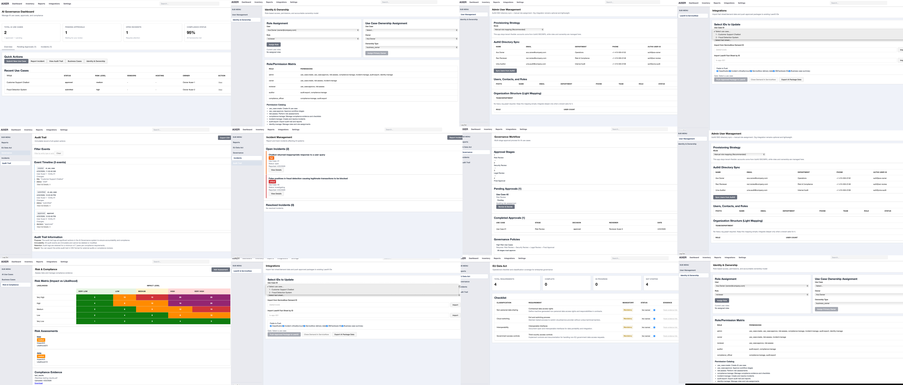
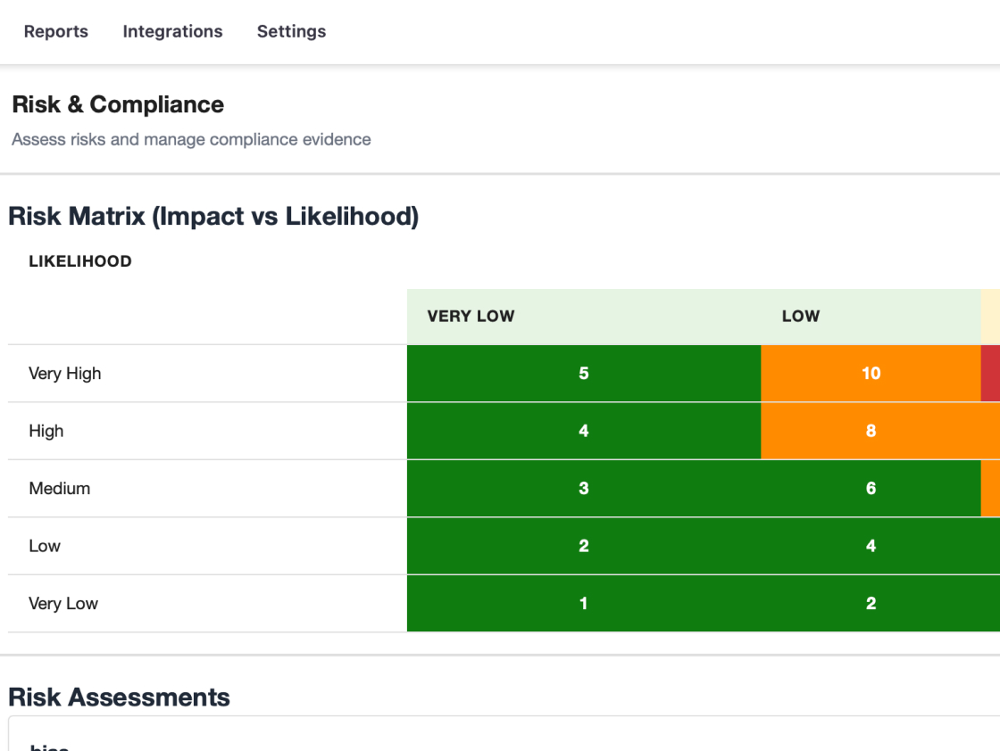
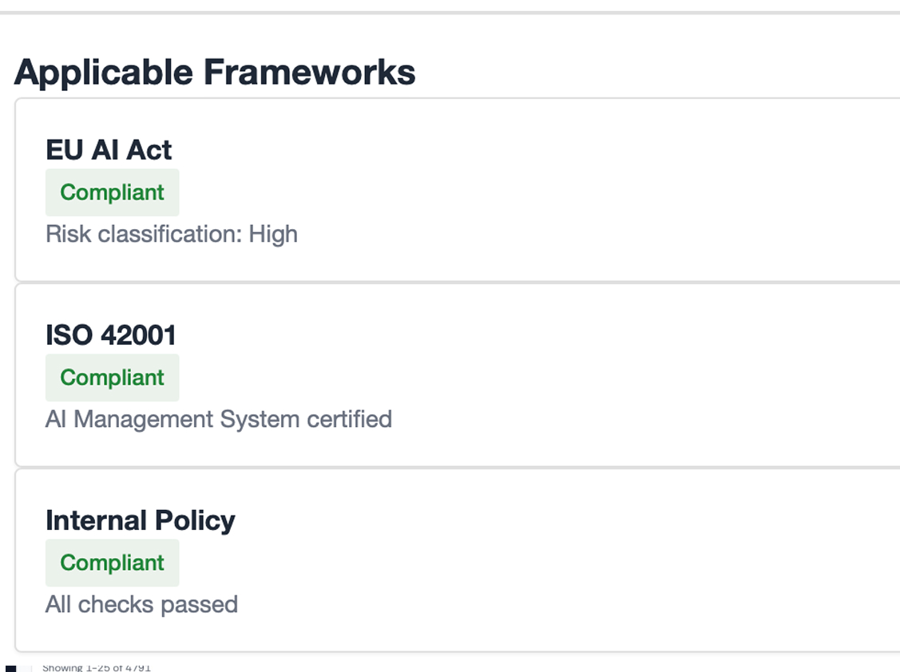
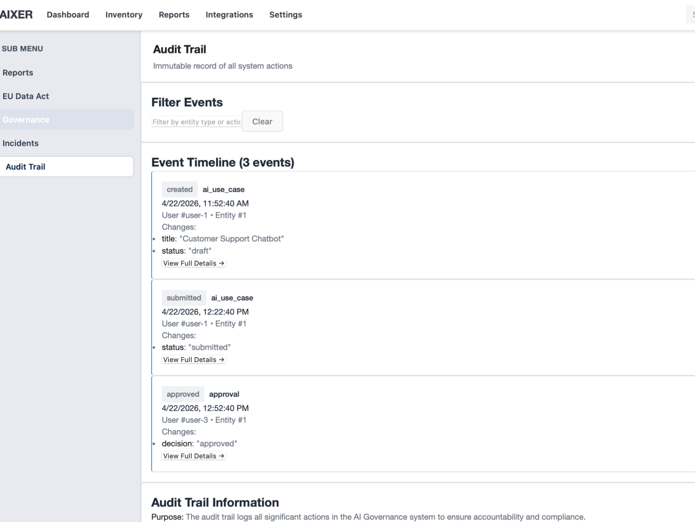

The EU AI Act is in force. Most organisations don't have a clear picture of which AI systems they run, what risks they carry, or what they'd show an auditor today. AIXXEN changes that.

The EU AI Act requires organisations to assess, document and monitor their AI systems. In practice, that means someone owns a spreadsheet. It's out of date. Nobody agrees on scope. And if an auditor came tomorrow, you'd be scrambling.
AIXXEN gives compliance, IT and leadership a shared view of AI risk — structured around the EU AI Act, connected to the systems you already use, and ready to evidence any audit.

A structured assessment for each AI system you use. You get a clear risk rating mapped to EU AI Act categories — without needing a legal team to interpret the regulation.

AIXXEN connects to the tools your IT and architecture teams already maintain. Your AI inventory stays current without manual updates — always a live picture, not a snapshot.

Every assessment, decision and status change is recorded automatically. When a regulator or auditor asks what you did and when, the answer is already there — complete and tamper-evident.
AIXXEN gives you a live view of what AI is deployed, what it does and what risk it carries. You stop depending on email threads and quarterly updates to do your job.
AIXXEN connects to the tools you already use to manage your application landscape. Assessments are triggered by changes, not by someone manually remembering to run one.
A clear, current view of AI risk across the organisation. Not a status update from three months ago — a live picture you can act on before a regulator does it for you.